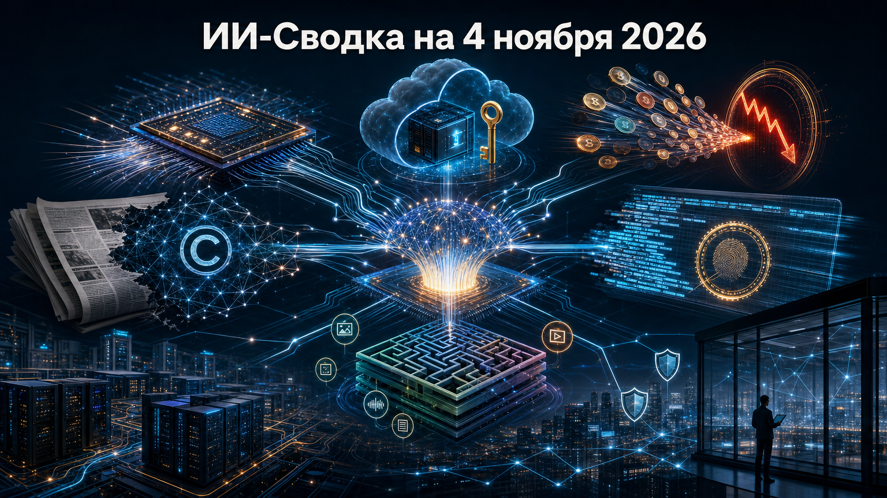

Развитие ИИ всё заметнее упирается не только в качество моделей, но и в доверие к инфраструктуре: оптическим сетям, ключам доступа, происхождению ответов и легальности данных. В сегодняшней повестке рядом оказались крупнейшая сделка в компонентах для дата-центров, новые схемы хищения вычислительных бюджетов и попытки криптографически доказать, какая модель сформировала ответ.
Отдельный сигнал — ускорение агентных систем повышает цену базовой кибергигиены. Это относится и к облачным LLM-сервисам, и к корпоративным инфраструктурам, и к посредникам, которые поставляют веб-данные разработчикам моделей.
Marvell и Lumentum объявили окончательное соглашение об объединении с заявленной enterprise value Lumentum около 115 млрд долларов. По условиям сделки акционеры Lumentum должны получить 4,5 акции Marvell за одну акцию; закрытие ещё потребует одобрения акционеров и регуляторов и ориентировано на первую половину 2028 года.
Сделка объединяет поставщика сетевых полупроводников с производителем оптических компонентов — двух слоёв, критичных для масштабных ИИ-кластеров. Это ставка на то, что узким местом будут не только GPU, но и передача данных между стойками и дата-центрами. Оценка синергий остаётся прогнозом сторон, а завершение сделки не гарантировано. Marvell agrees to acquire Lumentum in $115 billion AI-connectivity deal
NVIDIA уведомила часть пользователей облачной платформы Brev о несанкционированной активности, которая, по данным публикации, продолжалась с 4 по 20 октября. Потенциально затронуты SSH-ключи для доступа к клиентским виртуальным машинам; компания заменила ключи и обновила инстансы.
Подтверждённых случаев злоупотребления ключами NVIDIA публично не сообщила. Но сам эпизод показывает, что в ИИ-облаках секреты доступа к VM остаются критической точкой риска: ротация ключей, журналирование и минимальные права доступа должны быть штатными мерами, а не экстренной реакцией. Не раскрыты ни вектор компрометации, ни масштаб затронутой аудитории. Nvidia Brev security breach may have exposed SSH keys used to access customer VMs
Google Threat Intelligence Group и Mandiant сообщили о двух кластерах атак, в которых злоумышленники монетизировали скомпрометированный доступ организаций к LLM и облачным ресурсам. В описанных случаях отдельные жертвы получали более 100 тыс. долларов fraudulent-расходов за сутки, а совокупные списания достигали примерно 1 млн долларов.
Злоумышленники использовали раскрытые endpoints и похищенные облачные учётные данные, service-account keys, GitHub-токены, session-токены и ключи LLM API; в части эпизодов упоминается эксплуатация CVE-2026-40217 в LiteLLM. Для компаний это означает, что контроль ИИ-расходов должен быть связан с управлением секретами, лимитами, аномалиями токенов и изоляцией gateway-инфраструктуры. Google: LLMjacking attacks rack up $1 million in cloud AI charges
Anthropic представила исследовательский проект FlashProve — подход к provable inference, при котором можно криптографически подтвердить, что ответ был сгенерирован заявленной моделью, не раскрывая её веса. Компания опубликовала технический отчёт, спецификацию протокола, исполнимый код, verifier-ы и Lean-доказательства под Apache 2.0.
Практический смысл такой технологии — проверяемое происхождение вывода: это может быть полезно для model routing, внешних оценок, аудита поставщиков и контроля соблюдения обязательств по использованию конкретной модели. Пока это исследовательский результат, а не готовая производственная функция: масштабирование, стоимость доказательств и принятие индустрией ещё предстоит проверить. Progress on provable inference for large language models
The New York Times подала федеральный иск к Brave в Манхэттене, утверждая, что браузерная компания скрейпила защищённые материалы и передавала их клиентам из ИИ-индустрии. Отдельный похожий иск подали Daily News, Chicago Tribune и Orlando Sentinel. В публикации среди названных клиентов Brave фигурируют Anthropic, Perplexity, Mistral, xAI и Cohere.
Это не установленный судом факт, а позиция истцов: они требуют запрета предполагаемой практики и компенсации ущерба, а ответ Brave на момент публикации не приводился. Однако спор важен для рынка: под юридическим давлением оказываются не только разработчики моделей, но и промежуточные поставщики данных, индексов и веб-доступа. New York Times and other outlets sue web browser Brave over alleged content scraping
Команда LongCat компании Meituan представила LongCat-2.5 — мультимодальную MoE-модель для длительных агентных задач, включая работу с крупными кодовыми базами. Компания заявляет архитектуру с 1,6 трлн общих параметров и примерно 48 млрд активных параметров на токен.
Релиз примечателен фокусом на долгих траекториях действий, программировании и мультимодальном вводе, а также заявлением Meituan об обучении на китайском вычислительном стеке. Однако сравнительные бенчмарки и характеристики этого стека пока следует считать заявлениями разработчика: независимых оценок качества и условий широкого доступа в доступном материале нет. Meituan unveils LongCat-2.5, a multimodal model for long-running AI agents
Positive Technologies сообщила через подразделение PT ESC IR о расследовании успешной атаки на инфраструктуру неназванной российской компании. По оценке специалистов, полный цикл атаки мог быть проведён агентами ИИ: от проникновения через внешний сервис до утечки конфиденциальной информации из критически важных внутренних систем прошло около трёх часов.
Компания говорит о доступе более чем к десяти узлам корпоративной инфраструктуры, но не раскрывает жертву, исходный вектор, индикаторы компрометации и технические доказательства полной автономности агентов. Поэтому атрибуцию следует воспринимать как предварительную оценку расследующей стороны. Даже в таком виде кейс подчёркивает необходимость сокращать время обнаружения и сегментировать доступы в российских корпоративных сетях. Positive Technologies расследовала кибератаку, проведенную ИИ-агентами